Famous landmarks / Places to visit
1. The Constanta Casino
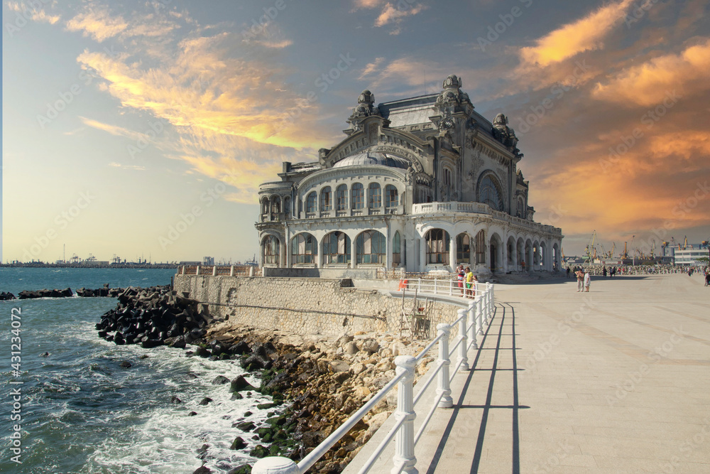 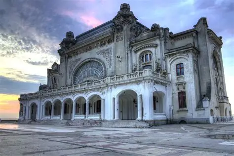No, we are not trying to get you to blow your money gambling – even though this building is called a casino, it is not actually a casino. Or, rather, it is a defunct casino, meaning it is no longer in use as a casino. This building is a beautiful work of architecture. It was commissioned by the King in the early 1900s and was used as a casino until World War II, when it was temporarily used as a hospital. When Nicolae Ceausescu came to power, the building was used as a restaurant, but the maintenance costs were so high that the building shut its doors in 1990. The building hasn’t seen any repairs since 1988, and the building is closed to the public to prevent injury and protect from thieves – but you can still view it from the outside!
2. The Merry Cemetery
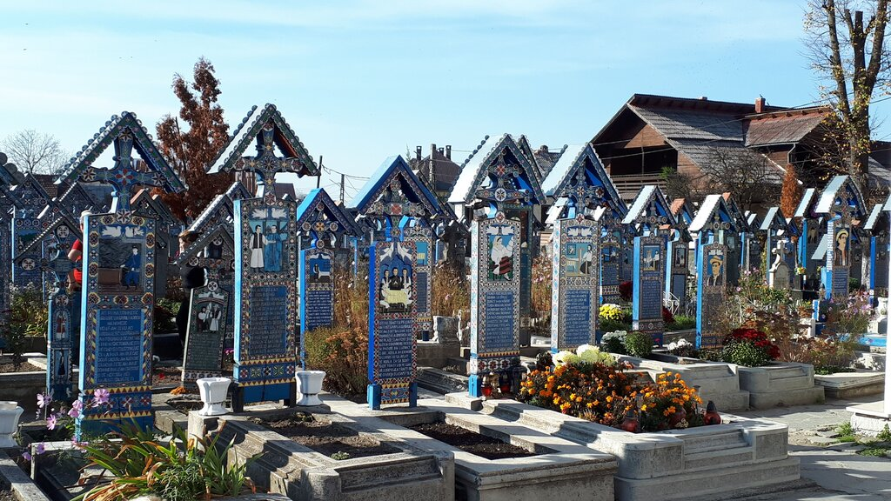 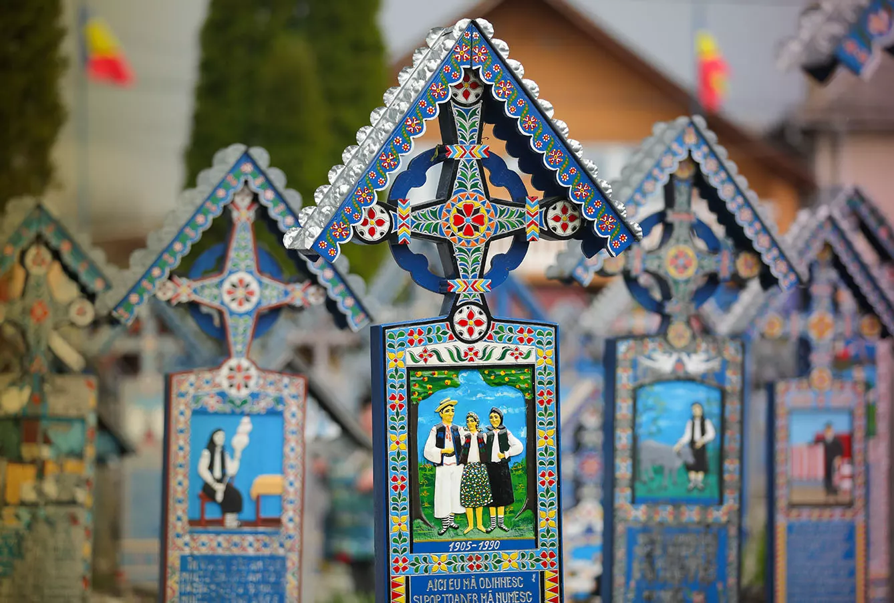Located in northern Romania in the Maramures region, the Merry Cemetery is a cemetery that is, well, merry. All the tombstones are decorated colorfully and have poetry or other writing describing and celebrating the life of each person buried there. It is believed that Dacian culture viewed death as a joyful moment, as the person passes from this life of suffering to one filled with peace and happiness.
3. Salina Turda
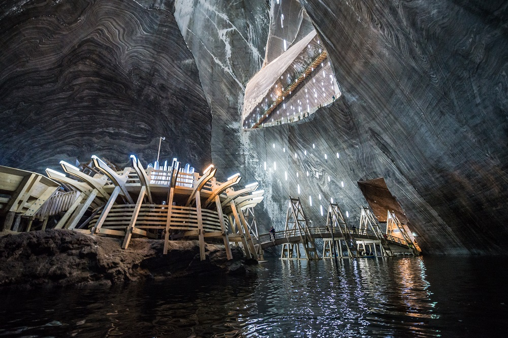 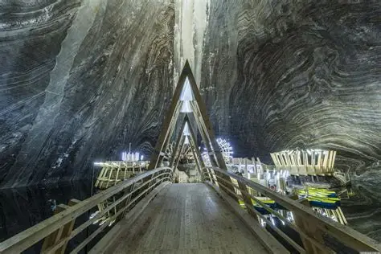This is a giant salt mine located in Turda, which is northwest Romania. More than just a salt mine, this is now an amusement park too, complete with a Ferris wheel, a bowling alley, rowboats and a mini golf course. This place is fun for the kids, but good for everyone because you breathe in all that healthy salt!
4. Palace Of Culture In Iasi
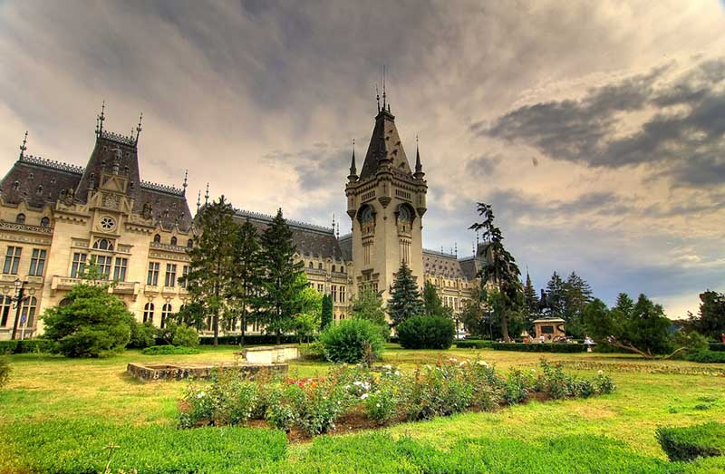 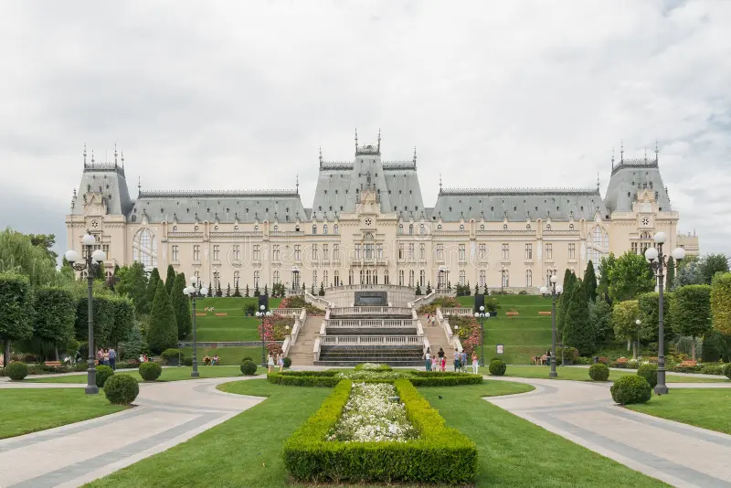This is actually a four-in-one museum. Built from 1906 to 1925, this building was the Administrative and Justice Palace only until 1955. After that, it was converted into four different museums. The museums held inside this building are the Art Museum, Moldavia’s History Museum, the Ethnographic Museum of Moldavia, and the Science and Technology Museum. Aside from the four museums, this building also has different rooms that you can visit. On the first floor there is the Voivodes’ Room, which contains portraits of Moldavia’s rulers and Romania’s kings, all painted by Stefan Dimitrescu and his students. There are quite a few other rooms. And even though this building is only about 100 years old, it is grandiose and gorgeous, with the look of a medieval fairytale! All in all, exploring this enormous building could easily fill up your entire day!
5. Bran Castle
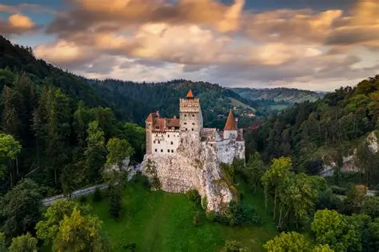 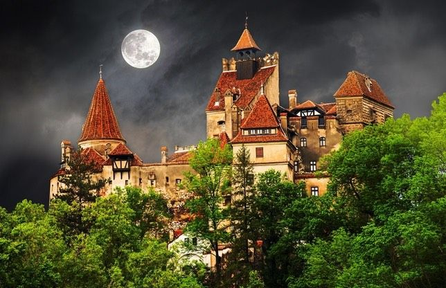Alright, so there are actually two castles that are considered “Dracula’s” Castle: Bran Castle and Poenari Castle. Bran Castle is significantly more popular, and subjectively more beautiful. This is the one that is most similar to the castle described in Bram Stoker’s novel, Dracula. Although Stoker had never been to Romania himself, Bran Castle in Transylvania pretty much perfectly fits the bill for Dracula’s castle. It is perched at the top of an ominous hill, it is large and majestic, and it dates all the way back to the 1300s. Some people believe that the character Dracula is based off the real-life Romanian Ruler, Vlad the Impaler. Vlad did visit this castle during his lifetime, but he did not actually live here. Because of its age and perch overlooking the valleys, this is the ideal beautiful yet isolated and weathered castle to visit.
6. The Palace Of The Parliament
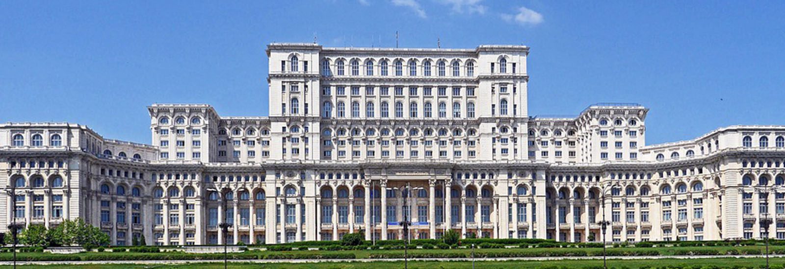Although the list of beautiful, large, and amazing buildings that there are in this world is endless, the list of the biggest buildings in the world are short. And if you are looking at the list of heavy buildings, there is one that tops all else: The Palace of the Parliament. This has been verified by the Guinness Book of World Records to be the heaviest building in the world. And weighing in at 9.0356 x 109 pounds, it is unlikely that there will be a heavier building ever, or at least not anytime soon! Today the Palace of the Parliament is an administrative building. It is the second largest administrative building, second on to the Pentagon. You can enter only through a guided tour, and it is a good idea to book tickets ahead of time. You will also need to bring your passport to be able to tour the building. The tour will last about 45 minutes.
7. The Black Church
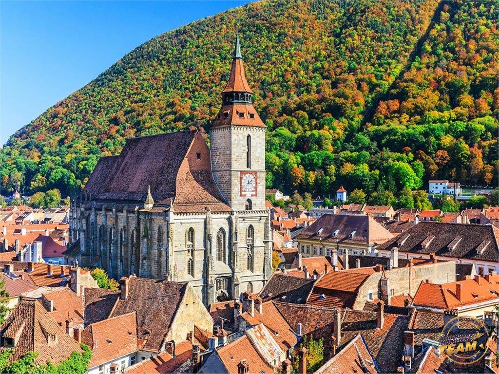 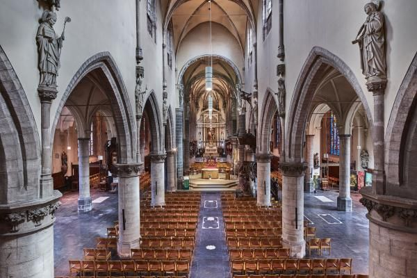The Black Church of Brasov was built in the 1500s and is the largest Gothic church in Eastern Europe. There is no other church that comes close to its size between Italy and Istanbul. Now, before you get worried, it is called the Black Church because its walls were darkened n a fire that nearly destroyed in entirely in 1689. Inside the church you will find a huge Bucholz organ and the largest collection of oriental carpets in Europe.
8. Peles Castle
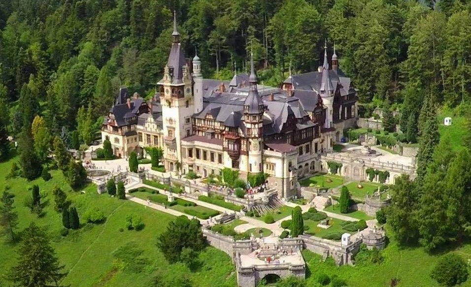
This is one of the most famous and well-known castles of Romania. It is located in the Carpathian Mountains, on a route linking Transylvania to Wallachia. This castle was constructed from 1873-1914 for the first king of Romania: King Carol I. King Carol I loved the mountains and when he came across this mountain range, he knew that this would be where he would want to spend the rest of his life. You will have to see it for yourself – the castle was beautifully built and the view of the mountains is absolutely magnificent!
9. Corvin Castle
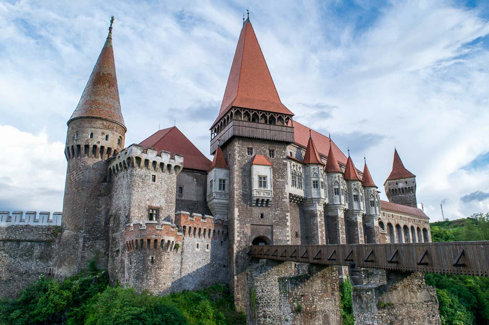 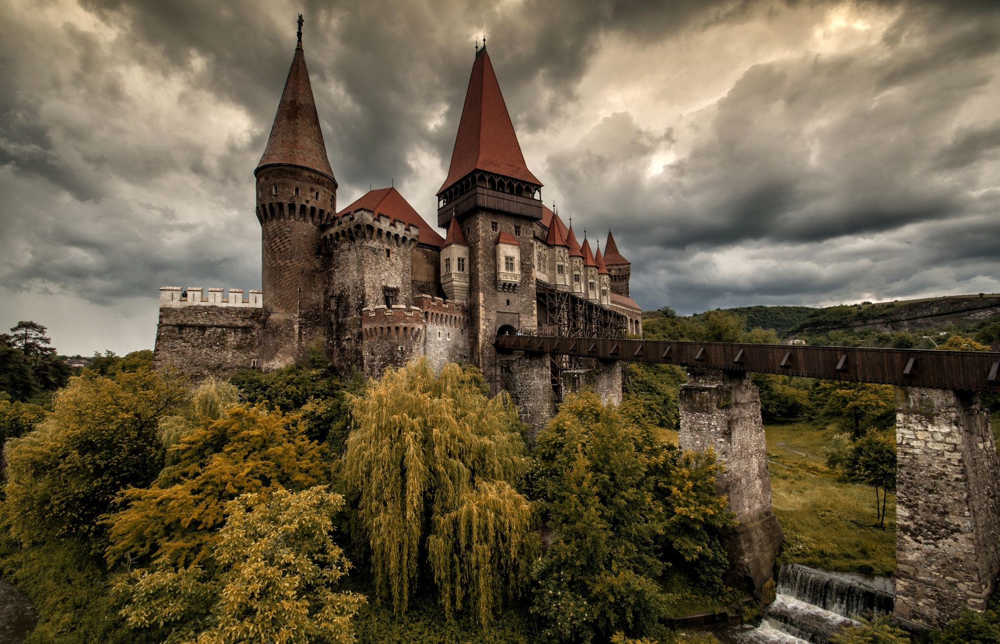This is a huge castle that dates back to 1446. It is also known by its two other names, Hunyadi Castle or Hunedoara Castle. It is built in a Gothic-Renaissance style and is located in Hunedoara, Romania, which is in the central-western part of the country. After the 17th century, the castle had been abandoned for many decades, and then a fire destroyed a great part of the castle, leaving it in ruins. What stands today is a restoration of the old castle, with modern architects interpreting how a great Gothic castle would have looked. Perhaps because of this creative interpretation, this castle looks straight out of a Game of Thrones episode!
10. Transfagarasan Highway
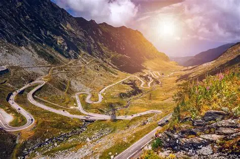 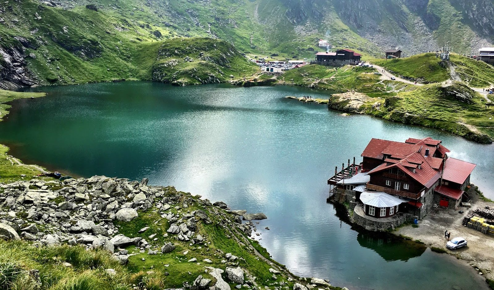Nicknamed "the road from the clouds" and "The Great Dragon" or "The Dragon" and cherished as "Manole's Dream", but especially appreciated as the most beautiful high-altitude road in the world, Transfăgărășan is certainly among the most loved paved routes of in our country and deserves to be loved both for the continuous spectacle it provides and for the history, legends and stories surrounding it.